EDGAR PARUCHO PALMA
Desarrollador Front-EndConstruyo sitios y aplicaciones web de alto rendimiento y visualmente atractivos.
Go to the English version
Mantra
App de Help Desk
Microfilms Center
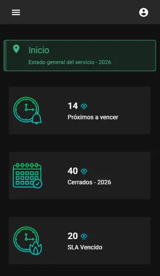
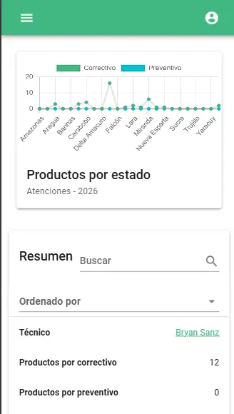
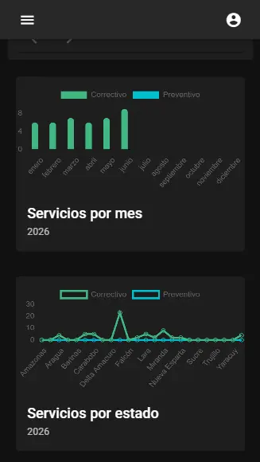
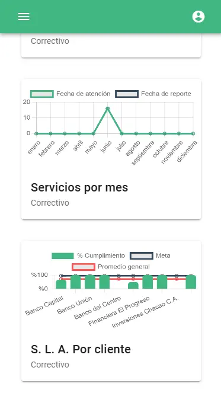
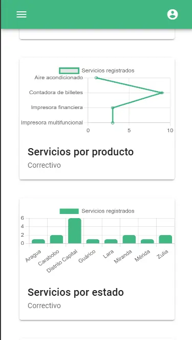
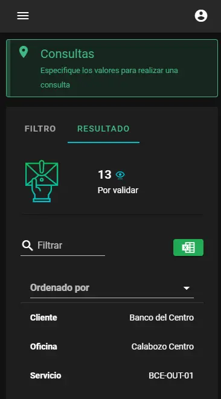
Arquitectura Full-Stack
Aplicación Web Progresiva (PWA)
Transformación Digital
Impacto Financiero y Comercial
Seguridad y Centralización Operativa
Front-End
- Vue.js (v2)
- Vuetify
- Vuex
- Vue-Router
- Options API
- Vue-CLI
- PWA
- Chart.js
Back-End y Base de Datos
- Node.js
- Express.js
- MongoDB
- REST API
- JWT
- Mongoose
Mantra ahora pertenece a Microfilms Center
Luthen
Financial log
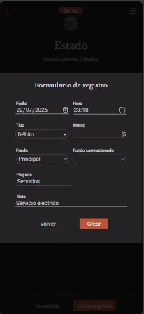
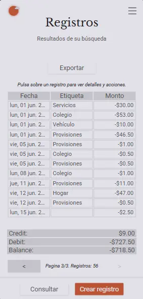
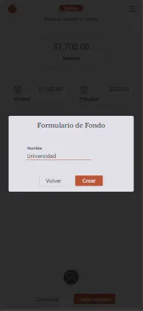
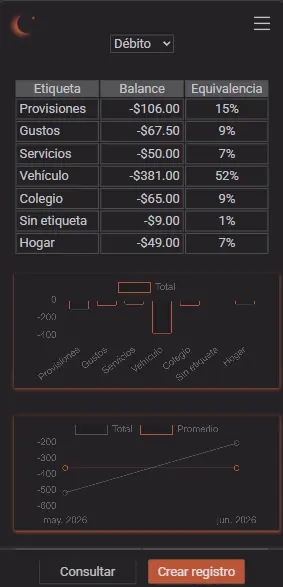
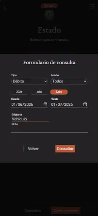
Arquitectura Full-Stack
Aplicación Web Progresiva (PWA)
Transformación Digital
Impacto Financiero y Comercial
Front-End
- TypeScript
- Vue.js
- Vue Router
- Vite
Back-End y Base de Datos
- TypeScript
- Node.js
- Express.js
- PostgreSQL
- Sequelize
- Docker
Lighthouse
Habit tracker
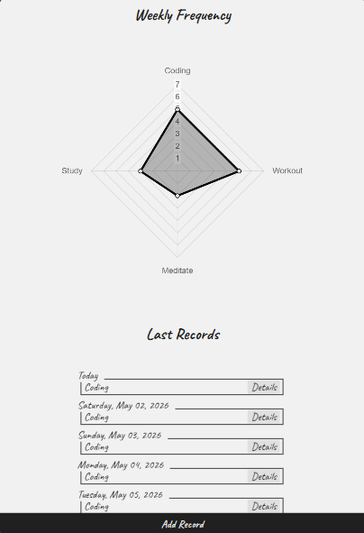
Arquitectura Full-Stack
Aplicación Web Progresiva (PWA)
Transformación Digital
Impacto Financiero y Comercial
Front-End
- React.js
- Vite
- CSS
Back-End y Base de Datos
- Node.js
- Express.js
- PostgreSQL
- Sequelize
Pensive
Notebook
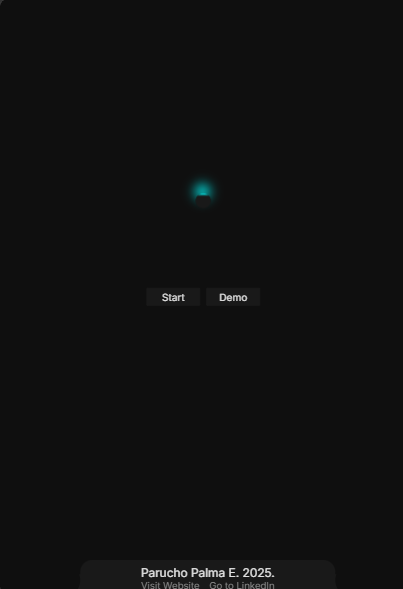
Arquitectura Full-Stack
Aplicación Web Progresiva (PWA)
Transformación Digital
Impacto Financiero y Comercial
Front-End
- TypeScript
- Vue.js
- Vue Router
- Vite
Back-End y Base de Datos
- Node.js
- Express.js
- PostgreSQL
- Sequelize
Acerca de mí

Me dedico al desarrollo web con enfoque en el front-end, la ingeniería robusta y el diseño UI/UX de alto nivel. Para mí, el desarrollo consiste en crear experiencias únicas, fuera de lo promedio y destacables.
Mi kit de herramientas principal se centra en Vue.js, TypeScript, y CSS, respaldado por experiencia full-stack en Node.js, Express, y bases de datos (SQL/NoSQL). Esto me ayuda a construir front-ends que se integren eficazmente con back-ends complejos. Como estudiante de por vida, continuamente optimizo mi flujo de trabajo integrando herramientas de IA.
Más allá del código, he construido una base sólida de disciplina y habilidades de gestión que he pulido durante los últimos años dedicándome a mi hogar y a mi familia. Busco oportunidades remotas donde esta ética de trabajo y compromiso con la calidad puedan generar resultados de gran impacto. Fuera de línea, normalmente me verás levantando pesas, leyendo o en algún juego de mesa con mi esposa e hija.
Gracias
Por tu invaluable tiempo
Agrégame a tu red para que tengamos la oportunidad de colaborar.